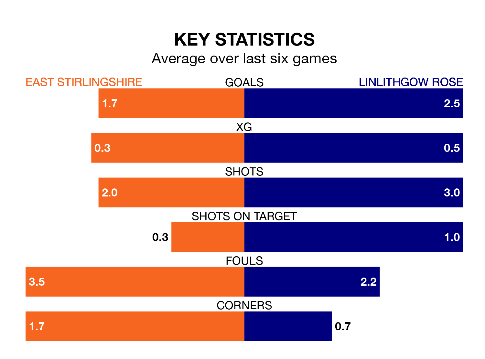

East Stirlingshire host Linlithgow Rose in Saturday's match at the Falkirk Community Stadium looking to bounce back from defeat last time out in Highland and Lowland Football Leagues.
The Shire, who sit zero in the league after 22 games, fell to a 4-2 away defeat to Bo'ness United on January 6.
They face a Linlithgow Rose side who secured a draw in their last match, a 0-0 tie with Bo'ness United, and who sit 13th in the table.
East Stirlingshire are in bad form in Highland and Lowland Football Leagues, with one win and five losses from their last six games.
With four wins and two draws over that period, Linlithgow Rose's form is much better – they have taken 14 points from 18, compared to the Shire's three.
With 31 goals in 22 games so far this season, the home side are the league's joint-zero-lowest scorers with 1.4 goals per game. And they are conceding more than average, letting in 44 goals at a rate of 2.0 per game.
The visitors, meanwhile, are above average scorers, with 2.1 goals per game, compared to a league average of 1.8. They have conceded 1.1 goals per game.
Updated: 10:50, 10/01/24